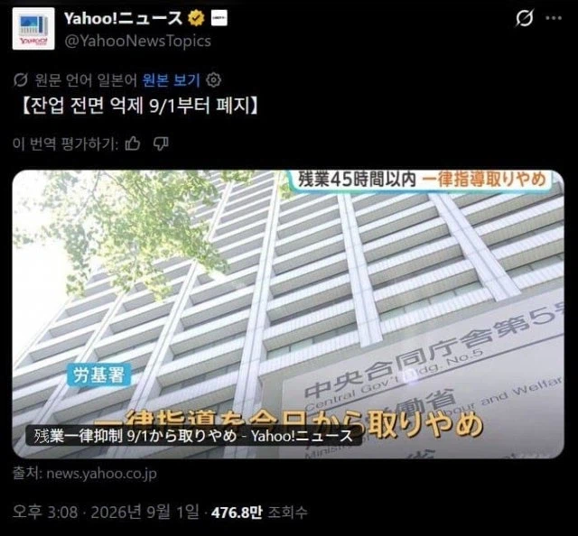
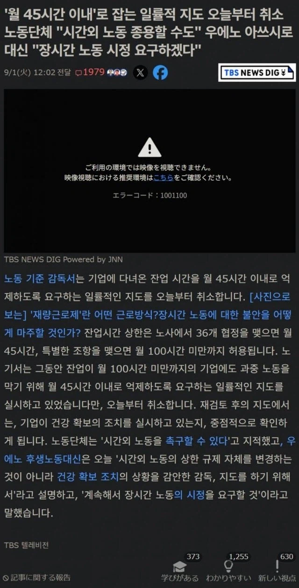

이제는 합법적으로 월별 잔업 100시간 이상도 가능한 일본이 됐고 당연히 이에 대한 일본 노동 단체의 불만과 항의가 빗발치는 모습이라고 함


이제는 합법적으로 월별 잔업 100시간 이상도 가능한 일본이 됐고 당연히 이에 대한 일본 노동 단체의 불만과 항의가 빗발치는 모습이라고 함
하지만 지지율 60퍼대 회복했다는데
아직 대가리 덜 깨짐
우리도... 저거 원하는 친구들 좀 있던데...
다 노동시장에서 사용자들인가보지..
그러면 좋겠지만 쉬었음 영포티라는게 문제 ㅠ
사용자는 극소수고 대부분 주부 학생 무직이었음ㅋㅋㅋ
다 같이 120시간 일하면 중국 미국 제끼고 천하제패 씹가능
일할땐 100시간 일하고! 쉴땐 푹쉬고! 유연하게!
푹 쉼(무덤에서)
ㄹㅇ 개드립에 수상하게 '젊을때 잔업 바짝 69시간 넘기고 싶다'는 개붕이들 넘쳤었지
???: 나는 빨래하고 집안일 하는 시간도 없어서 바빠죽겠는데 니들도 하루에 3시간씩 잠을 자며 일해봐라 ㅋㅋㅋㅋㅋㅋㅋㅋ
자아가 있으면 힘들게 수상 되어놓고 이렇게 비호감짓만 골라서 할 리가 없음
아소 타로 꼭두각시인게 거의 확정임
ㅎㄷㄷㄷㄷㄷㄷ
2030도 돌아섬? 절대적 지지를 받던 수준이였던걸로 기억하는데
2030 지지가 정치적 지지와는 달리
SNS에서 이미지작 (정책 말고 타카이치라는 인물에 대한 호감작)을 잘 해서 무당층이나 정치무관심층을 싹 지지층으로 바꿨는데
이후 순수 본인똥볼로 그거 도로아미타불로 만든거라는 칼럼? 분석? 글을 본듯
나는 ot수당 쳐주는 회사다보니 52시간제한 폐지됐으면좋겠음. ot하면 한시간에 3만원인데...
포괄이 없어져야 가능하지
일본 좋아서 넘어간 한국인 외노자들 행복사
일본 외노자 개붕이 많던데 어카냐 ㄷㄷ
일본에 포괄 없으면 뭐 절대 다수가 수당 없는 한국보담은..
선진국 일본은 차원이달라!
전기업 블랙화!
하루 1시간만 잔업해서 월 20시간 찍어도 삶이 피폐해 지는데 100시간은 또라인가 진짜
진짜 두시간쯤 잔업하고나서 퇴근해서 쓰러진다음 다음날 일어날라하면 끄으으악 소리 절로남 ㅋㅋㅋㅋ
100시간 잔업이면 그냥 옛날처럼 논 빌려서 소작농하는게 여유시간 더 많은거 아님?ㅋㅋ
주6일 15시간씩 (토요일만 10시간) 85시간하고 뒤질거 같던데 여기서 15시간을 어케 더하냐
월 100시간이면 휴무 없이 계산해도 일 11시간씩은 해야 된다는 건데 미친놈들인가
컨설펌이나 투자은행 같은 곳은 법에 안 걸리려고 서비스 야근 하던데
이제 제대로 야근 시간 산정돼서 야근 수당 달달하게 더 받아가겠네
yee
포괄만 없으면 잔업을 몇시간 하든 상관없지
야근수당 제대로 책정해야 하면 사용자가 잔업 못하게 막을 수도 있음 ㅋㅋ
제대로 돈주고 하는거면 노상관. 오히려 원하는 노동자도 많을듯. 문제는 조카튼 포괄로 돈안주고 부려먹을려니 문제지
오 우리도 한동안 이 문제 말 많았는데 먼저 해주고 ㅈ되는거 빨리 보여주면 좋겠다
주말도 잔업 포함이면 잔업 달에 120시간까지 해봤는데 사람이 할짓이 아님
정치 후진국
아니 100시간은 씹 ㅋㅋㅋ
월 100시간이면 근무일 20일이라 치면 매일 약 5시간씩 잔업해야 한다는 소리잖아? ㅋㅋㅋ 지금도 그러는지 모르겠지만 맞교대 돌리는 공장이면 누군가에게는 일상이었겠는데 ㅋㅋ
월 100시간 잔업이랑 주 120시간이랑 뭐가 더 오래 일하냐
저래놓고 본인은 현장도 잘 안나가고 자택에서 놂 ㅋㅋㅋㅋㅋ 역대 총리중에 제일 근무 태만한 수준이라던데
얼굴마담이니까
기업하기 좋은 나라 일본